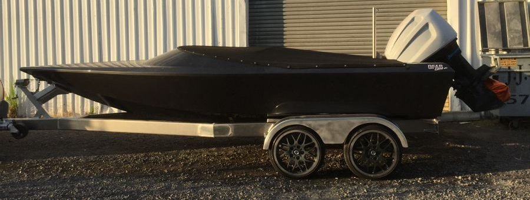
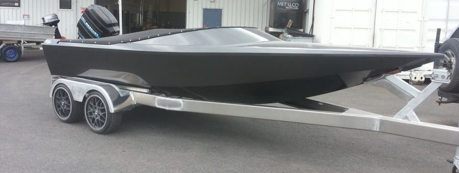
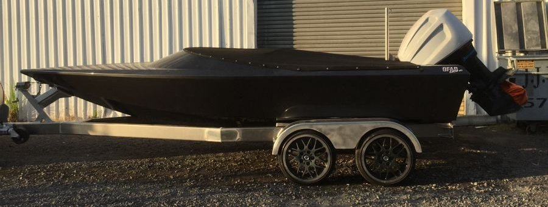
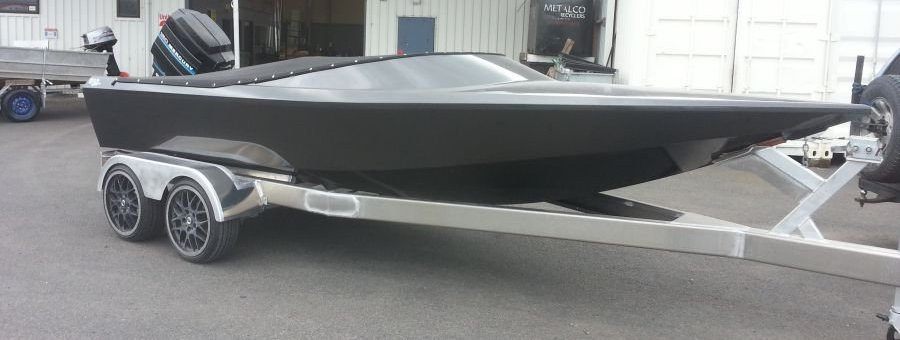

Skiboat Hulls
GFAB currently custom builds 5800 Skiboats. If you are looking for something larger or smaller than a 5800, we can work with you to design and produce the ideal hull to suit your needs.
All our boat hulls are constructed out of 5083 marine grade high tensile alloy and are CNC designed and cut to provide a true hull.
We specialise in the production of aluminium boat hulls and trailers but we also work closely with a number of fit out specialists. These specialists can offer anything from the minor requirements to a full fit out of the entire package, leaving you with a complete ready to run Skiboat.